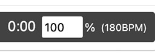
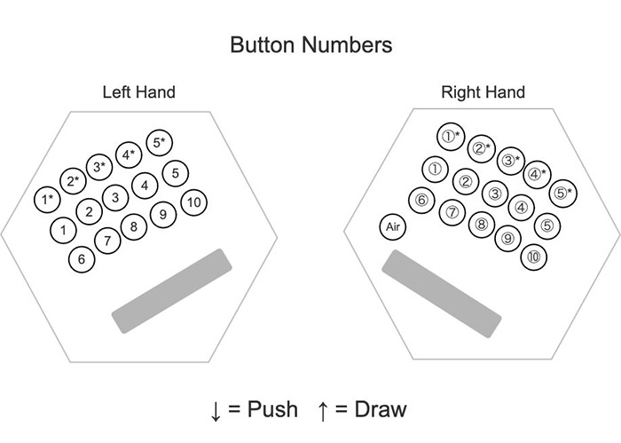

Play ABC tunes with synchronized Jeffries or Wheatstone Anglo concertina fingering diagrams.
Credits
The visual design of the player's layout was inspired by several Anglo Concertina "Play Along" instructional videos by Ephraim Schafli.
Overview
Load, type, or paste ABC tunes and play the tunes with synchronized standard notation and Anglo concertina fingerings.
Choose Jeffries or Wheatstone concertina layouts and On-Row or Cross-Row fingering solutions.
Play tunes with synchronized notation highlighting and a fingering diagram that shows the required button and Push or Draw direction.
Edit the ABC directly, click rendered notes to locate them in the editor, and use manual tablature overrides when you want to specify particular fingerings.
Load and work with multi-tune ABC collections, save your edited ABC, and create share links for one tune or the complete collection.
Use the resizable workspace and optional full-page fingering diagram for practice on desktop and mobile browsers.
Opening and Selecting Tunes
You can start by typing or pasting a single tune directly into the ABC text area, open an ABC file containing one or more tunes, or send a set of tunes directly from ABC Transcription Tools.
If more than one tune is loaded from a file, share link, or direct transfer, choose the tune from the Tune menu.
The ABC text area accepts only one tune at a time when pasting.
If a paste would put multiple tunes in the editor, the paste is not performed and a message asks you to save the tunes to a .abc file and load that file into the tool instead.
If you have unsaved ABC changes and choose a new ABC file, the tool warns that the existing work will be lost and asks you to confirm before the new file is opened.
Concertina and Fingering Settings
Select the Concertina type (Jeffries or Wheatstone) and Fingering solution (On-Row or Cross-Row).
Use Fingering display to choose how the active concertina button and bellows direction are shown.
Button Ring draws a full colored circle around the active button. Button Half highlights only the Push or Draw half of the button, so the bellows direction is indicated by both color and position.
Button Ring with Arrows and Button Half with Arrows use the same button highlighting and also display a large bellows-direction arrow centered between the left- and right-hand button groups. A red downward arrow indicates Push; a green upward arrow indicates Draw.
The Push/Draw legend changes to match the selected Ring or Half display style. Red indicates Push and green indicates Draw.
These choices are remembered in this browser.
The fingering solution descriptions below are relative to C/G tuning.
On-Row:
Jim Van Donsel's original fingering solution, which favors the C-row:
Favors playing D5 and E5 on the right-side C-row.
For Jeffries-style instruments:
Favors right-side top-row 2nd button for C#5 and D#5.
Cross-Row:
A more cross-row friendly fingering solution:
Favors playing the D5 and E5 on the left-side G-row.
Favors playing C5 on the left-side G-row draw.
Favors playing B4 on the right-side C-row draw.
For Jeffries-style instruments:
Favors right-side top-row 2nd button for C#5 and D#5.
ABC Editing, Notation, and Fingering Display
The upper-left panel contains editable ABC and the lower-left panel shows the rendered notation and playback controls.
Editing the ABC rebuilds the notation, audio, and fingering solution.
Click a note head in the rendered notation to highlight it in red, select its associated note in the ABC editor, and immediately show that note's effective button and Push/Draw direction on the main Fingering Diagram without starting playback.
The complete ABC note token is selected, making it easy to replace the complete note or use Tab Override to change its fingering.
The Small / Medium / Large / Largest selector changes the ABC editor text size.
Medium is the default, and the selection is saved in this browser.
Resizing the Panels
On wide screens you can drag the divider between the left and right sides to resize the ABC/notation area and fingering diagram.
Drag the divider between the ABC and notation panels to resize those two panels independently.
Double-click either divider to restore that divider to its original default position.
The divider positions are remembered in this browser and restored the next time the tool is opened on a wide screen.
Playback and Tempo
As each melody note plays, the notation cursor follows the tune and the fingering diagram highlights the required concertina button.
Red indicates Push and green indicates Draw.
Note names throughout the tool are displayed using sharps rather than flats.
Check Show note in the Fingering Diagram header to also show the current pitch as a quarter note on a staff positioned to the right of the Push/Draw legend. The Show note setting is remembered in this browser and is off by default until you enable it.
The staff notation uses sharps for accidentals, matching the note names used by the tool.
Playback uses the ABC Transcription Tools custom concertina MIDI program 133 for the melody, and program 0 for bass and chords, overriding matching playback directives in the source ABC.
Check Metronome to add a meter-appropriate metronome click during playback. Changing this setting stops and rewinds the current tune. The metronome setting is remembered in this browser but is not included in share links.
Check Count in? to show a five-second countdown before playback starts when you click Play while playback is stopped.
The Count in setting is remembered in this browser.
Click Mute Melody in the Notation header to mute the concertina melody. This is available for every tune, including tunes without chord symbols, so you can practice with the metronome alone. If the tune contains chord symbols, chord and bass accompaniment remain audible.
Toggling Mute Melody or Unmute Melody stops and rewinds the tune. If it was playing, playback restarts from the beginning after the five-second count-in when Count in? is enabled, or immediately when Count in is disabled. If the tune was stopped, it remains stopped.
The button changes to Unmute Melody; click it again to restore the concertina melody.
The melody always starts unmuted when the tool is opened, and the mute setting resets to unmuted any time you change tunes or load a new tune collection.
Click Tempo in the Notation header to set playback tempo from 10% to 200% of the tune's original tempo. The value is remembered in this browser.
You can also click the tempo percentage box on the playback control bar:

Full-Page Fingering Diagram
Click Full-Page View in the Fingering Diagram header when you want the diagram to occupy the main browser view while keeping the playback controls across the bottom.
Click Exit Full Page or press Escape to return.
Saving the ABC
Click Save to save the entire currently loaded tune collection, including edits made to any tune.
Edits are retained when you change tunes with the Tune menu.
On mobile devices, the file is saved with a .txt extension.
Sharing Tunes
Click Share Tune to create a share link for the currently displayed tune, or Share All Tunes to create a share link containing all loaded tunes.
The link includes the current Concertina type, Fingering solution, and Fingering display and is copied to the clipboard.
A share button is disabled when its resulting link would exceed the maximum allowed of 8100 characters.
Opening a share link restores its Concertina type (Jeffries or Wheatstone), Fingering solution (Cross-Row or On-Row), and Fingering display (Button Ring, Button Half, Button Ring with Arrows, or Button Half with Arrows), and displays the first tune encoded in the link.
When tunes are opened from a share link or transferred directly from ABC Transcription Tools, click the Click to Enable Playback button in the playback area before using the normal playback controls.
This user action allows audio playback to be initialized on browsers that require a user gesture before starting audio.
ABC Chord Symbols
Quoted ABC chord symbols are ignored by the fingering solver but remain available to abcjs for accompaniment.
Advanced: Manual Tablature Overrides
Use Tab Override when you want a note to use a specific concertina button or bellows direction instead of its automatically calculated fingering.
Click a note in the notation, then click Tab Override.
The popover has three rows matching the concertina layout.
Each row has the five left-hand buttons on the left and the five right-hand buttons on the right, separated by a small gap. The top row contains the * buttons, the middle row contains buttons 1–5, and the bottom row contains buttons 6–10.
Click the button you want, then choose Push ↓ or Draw ↑ if you need to change the direction.
A newly selected button uses Push by default unless the note already has a Push or Draw override.
If the note already has a manual override, your choices change that override rather than adding another one.
Notes without overrides continue to use the automatically calculated fingering.
Use the ← and → buttons to move through the notes while entering or reviewing fingerings.
The selected note is highlighted in the notation and its effective fingering is shown immediately on the main Fingering Diagram.
The Tab Override popover can be dragged to a convenient position and remembers that position while the tool remains open.
Manual overrides use the same ABC annotation format as ABC Transcription Tools, so existing valid tablature annotations are recognized automatically.

Removing the Visual Design Watermark
By default, the Fingering Diagram displays a small Visual design by Ephraim Schafli watermark in the lower-right corner.
To suppress the watermark, add nowatermark=1 to the tool URL.
For example, use ?nowatermark=1 when it is the first URL parameter, or &nowatermark=1 when other URL parameters are already present.
If the tool is opened with nowatermark=1, Share Tune and Share All Tunes links created by the tool also include that setting.
ABC Anglo Concertina Fingering Image Generator
If you would like to export a sequence of JPEG images for each note in a tune with the same options and fingering graphics as this tool, check out the:
ABC Anglo Concertina Fingering Image Generator
About
This tool was created by
Michael Eskin
If you find it useful, please consider a contribution via
Michael Eskin's Tip Jars